Tornar al webAvís legal
Titular del web
En compliment de l’article 10 de la Llei 34/2002, de serveis de la societat de la informació i de comerç electrònic (LSSI), l’informem que aquest web pertany a:
- Titular
- Jesús Fonseca Sánchez, treballador autònom que opera amb el nom comercial Reformas F.S Fonseca
- NIF
- *********
- Domicili
- Mediterrany, 08490 Tordera (Barcelona)
- Telèfon
- 613 76 64 76
Objecte
Aquest web dona a conèixer els serveis de reformes, construcció i instal·lacions del titular i permet demanar una visita sense compromís. Visitar-lo no obliga a res ni té cap cost.
Propietat intel·lectual
Els textos, el logotip, el disseny i les fotografies d’obra són propietat del titular o s’utilitzen amb la seva autorització, i no es poden reproduir sense permís. La imatge d’ambient de la secció d’opinions és d’un tercer i s’utilitza amb llicència Creative Commons BY 2.0, amb l’autor citat al peu del web.
Responsabilitat
Procurem que la informació d’aquest web sigui correcta i estigui al dia, però els preus, terminis i condicions de cada obra són els que figuren al pressupost escrit que es lliura després de la visita. No responem del contingut dels webs externs als quals s’enllaça, com Google o WhatsApp.
Dades personals i galetes
L’ús que fem de les dades que ens faciliti s’explica a la política de privacitat. Aquest web no utilitza galetes.
Legislació aplicable
Aquest avís es regeix per la legislació espanyola.